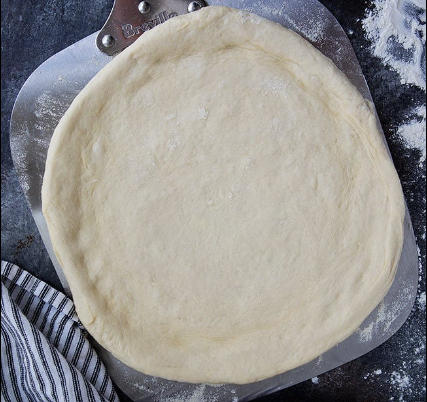

I started cooking when I moved out of my house and started living on my own. At first it was ready to make meals and stuff that isn't healthy for you. But then I started looking up recipes on Google, YouTube, or anywhere that I could find something tasty. Once I found the gratification that comes from making something by yourself and eating it and seeing how good it tastes I never went back to bad ready to eat meals again. All in all, I think the most fun I've had while cooking was when I visited home and my Father and I made pizza from scratch. It was difficult to make and stretch the dough, but it was so much better than ordering it from a typical store.
